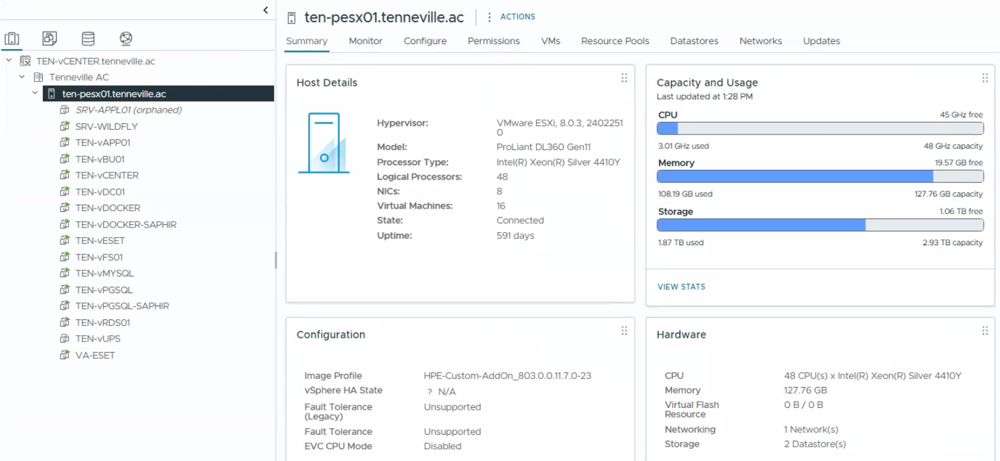

Objective
This check verifies that ESXi hosts are reachable from the vCenter management interface and that their connection status can be reviewed.
This is a verification-only control intended to confirm host visibility and accessibility. No configuration or remediation is performed.
Prerequisites
- Access to vSphere Client
- Read or monitoring permissions
- Access to ESXi hosts and virtual machines
Open vSphere Client
Log in to the vSphere Web Client using a web browser. Access the vCenter instance via its IP address or FQDN.

Navigate to Hosts
Go to Inventory. Select the cluster or datacenter containing the ESXi hosts.

Result Interpretation
- ✅ OK – Hosts reachable from vCenter and direct ESXi access confirmed
- ⚠️ WARNING – Hosts reachable from vCenter but direct ESXi access partially unavailable
- ❌ NOK – One or more hosts not reachable or disconnected